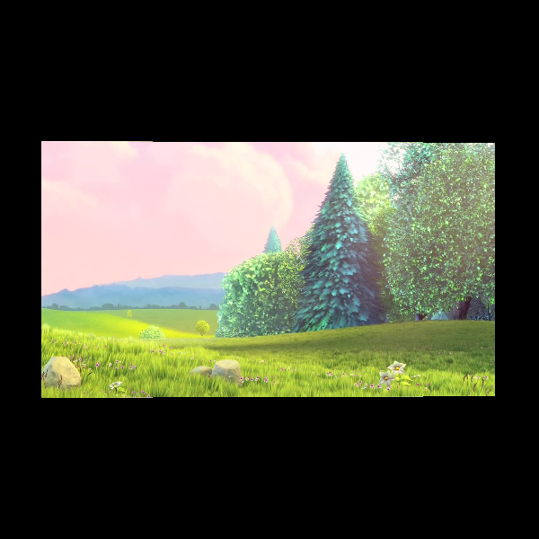

Note
Click here to download the full example code
Play a video in the 3D world¶
The goal of this demo is to show how to visualize a video on a rectangle by updating a texture.
from fury import window, actor
import numpy as np
import cv2
import time
# The VideoCapturer Class
# This Class wraps OpenCV Videocapture
class VideoCapturer:
def __init__(self, video, time):
self.path = video
self.video = cv2.VideoCapture(self.path)
self.fps = int(self.video.get(cv2.CAP_PROP_FPS))
self.frames = int(self.video.get(cv2.CAP_PROP_FRAME_COUNT))
self.time = time
# A generator to yield video frames on every call
def get_frame(self):
start = time.time()
for _ in range(self.frames):
isframe, frame = self.video.read()
dur = time.time() - start
if dur > self.time:
break
if isframe:
yield cv2.cvtColor(frame, cv2.COLOR_BGR2RGB)
self.video.release()
yield None
class VideoPlayer:
def __init__(self, video, time=10):
# Initializes the Video object with the given Video
self.video = VideoCapturer(video, time)
self.video_generator = self.video.get_frame()
self.current_video_frame = next(self.video_generator)
# Initialize Scene
self.initialize_scene()
# Create a Show Manager and Initialize it
self.show_manager = window.ShowManager(self.scene,
size=(900, 768),
reset_camera=False,
order_transparent=True)
self.show_manager.initialize()
# Initialize the Scene with actors
def initialize_scene(self):
self.scene = window.Scene()
# Initialize a Plane actor with the 1st video frame along with
# the actor grid which is to be updated in each iteration
self.plane_actor = actor.texture(self.current_video_frame)
self.scene.add(self.plane_actor)
# The timer_callback function getting called by the show manager
def timer_callback(self, _obj, _event):
self.current_video_frame = next(self.video_generator)
if isinstance(self.current_video_frame, np.ndarray):
# update texture of the actor with the current frame image
# by updating the actor grid
actor.texture_update(self.plane_actor, self.current_video_frame)
self.show_manager.scene.azimuth(1.5) # to rotate the camera
else:
self.show_manager.exit()
self.show_manager.render()
def run(self):
# Add a timer callback to show manager after with
# video frame duration as the interval
self.frame_duration = int(1000/self.video.fps)
self.show_manager.add_timer_callback(True,
self.frame_duration,
self.timer_callback)
self.show_manager.start()
# Create VideoPlayer Object and run it
video_url = "http://commondatastorage.googleapis.com/" +\
"gtv-videos-bucket/sample/BigBuckBunny.mp4"
vp = VideoPlayer(video_url)
vp.run()
window.record(vp.show_manager.scene, out_path='viz_play_video.png',
size=(600, 600))
Total running time of the script: ( 0 minutes 11.174 seconds)